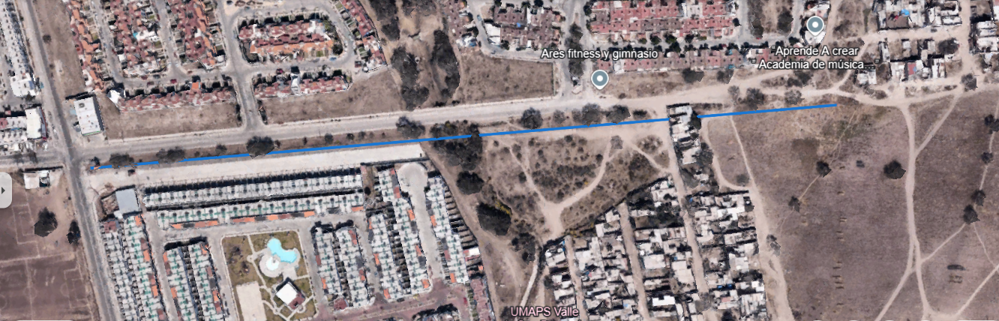
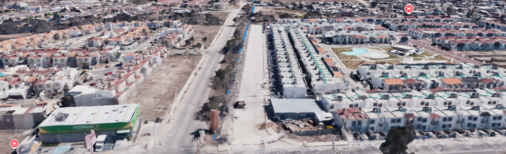

Descripción
Esta ciclovía está sobre el camellón, es bidireccional y cuenta con semáforos para el cruce de los ciclistas. Se conservaron los árboles existentes en el área.
Características
Buenas
- Bidireccionalidad
- Semáforos para ciclistas
- Conservación de árboles
Malas
- Poco espacio destinado para bicicletas
- Reto de esquivar árboles
- Aisladas e inseguras en algunos tramos
Impacto Ambiental Positivo
- No contaminan
- No consumen combustibles
- Reducen la congestión
- Mejoran la seguridad
Galería de Imágenes



Tabla Comparativa
| Estándar de Ciclovía | Ciclovía Real |
|---|---|
| Ancho adecuado | Tiene el ancho adecuado para circular un ciclista por cada carril. |
| Segregación física | Está a desnivel en el camellón de en medio. |
| Pavimento de calidad | El pavimento está en buen estado, sin agujeros ni grietas. |
| Señal clara | Tiene los señalamientos sobre el piso necesarios para indicar al ciclista. |
| Intersecciones seguras | Conecta con otras ciclovías y cuenta con semáforos para ciclistas. |